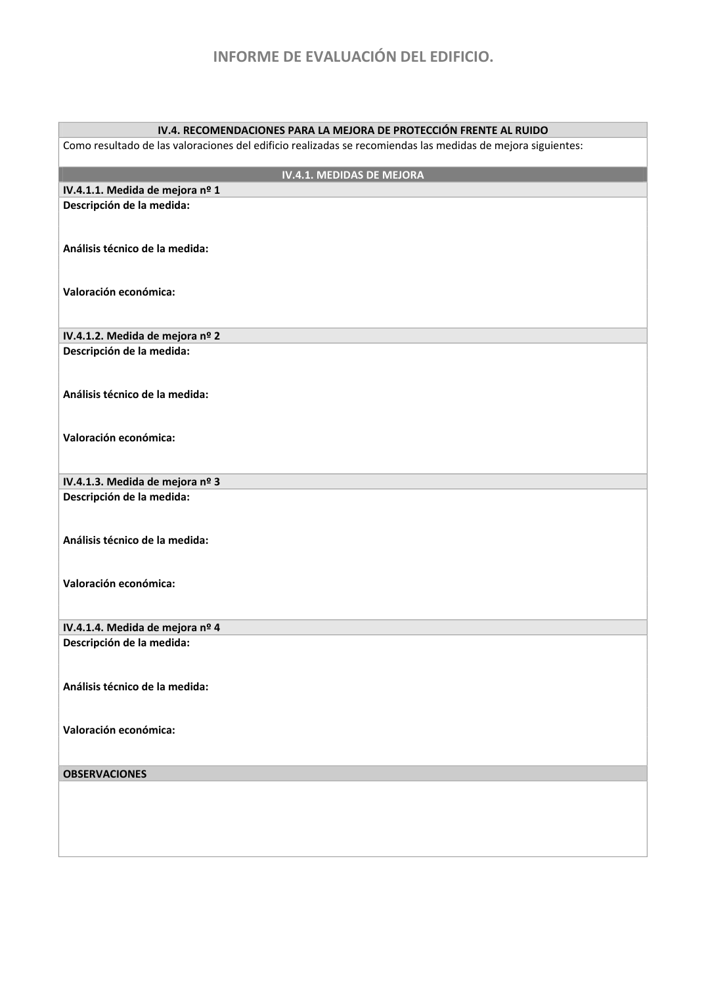

GUIA · Página 50 · versión 2016-11-01
SHA256: 813669d3066c0ff79457d57b80b0512a4fbb248bc5db1f7baf473c369a064738 · página física 50 de 65 · métodos de encabezado
solo si están cotejados.
Formatos: Markdown · JSON de bloques · PDF p. 50 · imagen PNG
INFORME DE EVALUACIÓN DEL EDIFICIO. IV.4. RECOMENDACIONES PARA LA MEJORA DE PROTECCIÓN FRENTE AL RUIDO Como resultado de las valoraciones del edificio realizadas se recomiendas las medidas de mejora siguientes: IV.4.1. MEDIDAS DE MEJORA IV.4.1.1. Medida de mejora nº 1 Descripción de la medida: Análisis técnico de la medida: Valoración económica: IV.4.1.2. Medida de mejora nº 2 Descripción de la medida: Análisis técnico de la medida: Valoración económica: IV.4.1.3. Medida de mejora nº 3 Descripción de la medida: Análisis técnico de la medida: Valoración económica: IV.4.1.4. Medida de mejora nº 4 Descripción de la medida: Análisis técnico de la medida: Valoración económica: OBSERVACIONES
